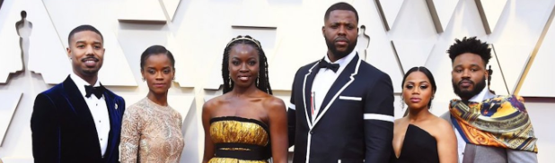
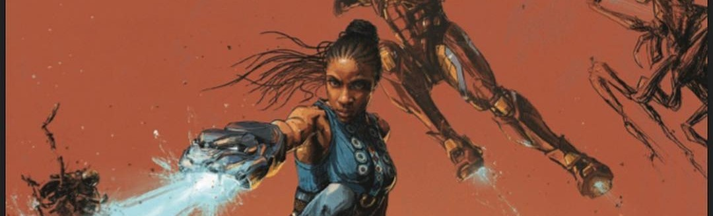
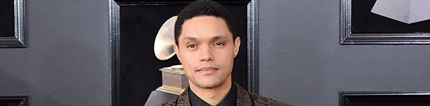

News
 The odds are against it – but in a year when voters may be reconsidering what makes a Best Picture winner, we should expect the unexpected
The odds are against it – but in a year when voters may be reconsidering what makes a Best Picture winner, we should expect the unexpected

Groundbreaking, American superhero film, Black Panther has once again broken through several movie industry glass ceiling.

The sister of Wakanda’s superhero is finally getting her own story, but her comic book is not the only one you should be reading

Trevor Noah has a role in one of the biggest movies of the year but nobody noticed.
First coined in 1993, the term has seen a revival thanks to the blockbuster hit, Black Panther.
Features →